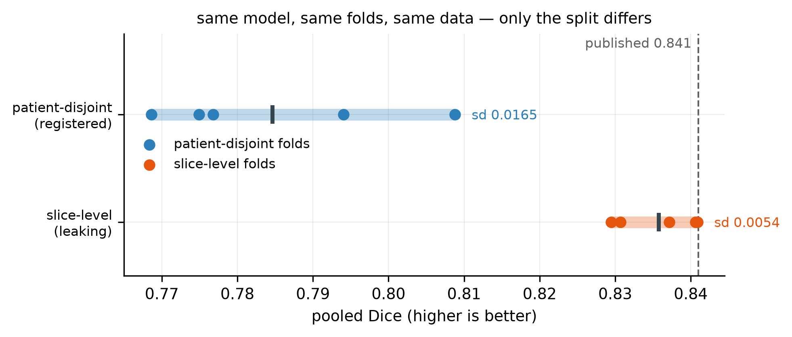

I work on medical image analysis, and mostly on one question: do the numbers we report actually hold up?
About
I studied Computer Science and Engineering at North South University in Bangladesh, where my undergraduate thesis was on brain tumour segmentation with U-Net and UNETR. Since then I've done a remote research internship at Duke, worked with the Big-Matrix R&D Lab at NSU, and kept running into the same problem: small choices in how data is split and scored can move a result more than the method being tested.
During the day I'm a software engineer at Ternary Solutions, building LLM systems where every generated message is checked and reviewed by a person before it goes out. That work taught me to care about whether a figure matches its source, and I bring the same habit to research.
I'm applying for PhD programmes starting in Fall 2027.
Research
Tumour-type conditioning and evaluation protocol in brain-tumour segmentation
Pre-registered study · with MD Mahi Sarkar and Farhana Rahman Elma · manuscript in preparation · code
I wrote down four hypotheses before training anything, then tested them on 3,064 MRI slices from 233 patients, keeping every patient's slices in a single fold. Giving the U-Net decoder the tumour type didn't help, even when it was given the true type (+0.003 Dice). That rules out bad type predictions as the reason for the null result.
The more useful finding was about evaluation. With the same model, folds and data, splitting by slice instead of by patient raised Dice by about 5 points and made the spread between folds three times smaller. I also found that our own region-wise augmentation drew an edge onto the tumour boundary in 62% of training images. That gave the model a shortcut, and Dice dropped by 0.22. I recorded the expected outcome before most of those folds ran.

Same model, same data. Only the split differs. Leaky slice-level folds look better and more stable than they really are.
Counting photographs, not images: duplicate-aware skin disease classification
With MD Mahi Sarkar and Farhana Rahman Elma · manuscript in preparation · code
A public five-class skin-condition dataset has 9,548 images. When I checked them, I found they come from just 341 photographs, each saved with 27 augmented copies (crops, padding, colour shifts and flips). A normal image-level split therefore puts a copy of almost every test photo into training.
I grouped the copies using flip- and rotation-invariant hashing plus filename matching, then re-ran eight models with grouped five-fold cross-validation, scoring only on original photographs. That made 40 runs, and one tested pipeline produces every table and figure.
9,548 images, but only 341 independent photographs. Splitting by image tests the model on photos it has already seen.
An English, Bangla and code-mixed (Banglish) benchmark where every answer (tumour type, location, size) comes directly from expert masks and labels, not from a language model, so each answer can be checked. It will use patient-disjoint splits, question-only baselines and confidence intervals from the start.
Experience
2026–nowResearch collaborator, Big-Matrix R&D Lab, North South University
2025–nowSoftware engineer, Ternary Solutions: LLM systems with grounding checks, human review and audit trails
2025Remote research intern, Kamaleswaran Lab, Duke University: MRI and retinal fundus imaging
2024–25Research assistant, Civil and Environmental Engineering, NSU: river erosion from satellite imagery
2020–24B.Sc. in Computer Science and Engineering, North South University
News
Nov 2026Started the bilingual medical VQA benchmark.
Nov 2026Finished all four pre-registered brain-segmentation hypotheses.